Белковые блюда: от 25 г белка на порцию
Для тренировок и сытного рациона, белок посчитан на порцию. 82 рецептов: у каждого время, калории и БЖУ на порцию, пошаговые инструкции и список покупок
- Творог с зеленью10 мин · 237 ккал · Б 27 г · Закуска
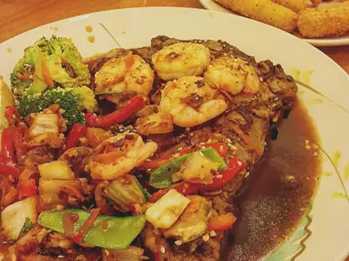
Креветки с чесноком15 мин · 295 ккал · Б 32 г · Второе блюдо Омлет с курицей15 мин · 361 ккал · Б 34 г · Завтрак
Омлет с курицей15 мин · 361 ккал · Б 34 г · Завтрак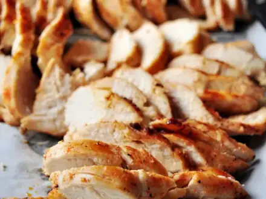
Сочная куриная грудка на сковороде25 мин · 275 ккал · Б 47 г · Второе блюдо Рыба на пару с лимоном25 мин · 170 ккал · Б 36 г · Второе блюдо
Рыба на пару с лимоном25 мин · 170 ккал · Б 36 г · Второе блюдо Горбуша в духовке в фольге25 мин · 335 ккал · Б 41 г · Второе блюдо
Горбуша в духовке в фольге25 мин · 335 ккал · Б 41 г · Второе блюдо Спагетти карбонара25 мин · 962 ккал · Б 49 г · Второе блюдо
Спагетти карбонара25 мин · 962 ккал · Б 49 г · Второе блюдо Паста с тунцом25 мин · 518 ккал · Б 26 г · Второе блюдо
Паста с тунцом25 мин · 518 ккал · Б 26 г · Второе блюдо Протеиновые блины на твороге25 мин · 344 ккал · Б 29 г · Завтрак
Протеиновые блины на твороге25 мин · 344 ккал · Б 29 г · Завтрак Салат из курицы из супа25 мин · 369 ккал · Б 31 г · Салат
Салат из курицы из супа25 мин · 369 ккал · Б 31 г · Салат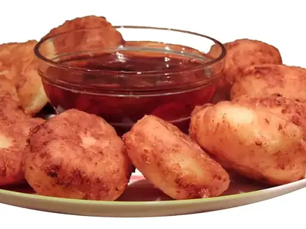
Сырники30 мин · 398 ккал · Б 28 г · Завтрак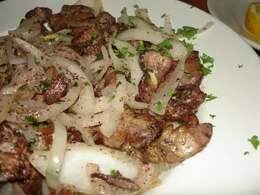
Куриная печень со сметаной30 мин · 502 ккал · Б 35 г · Второе блюдо Минтай в кляре30 мин · 366 ккал · Б 30 г · Второе блюдо
Минтай в кляре30 мин · 366 ккал · Б 30 г · Второе блюдо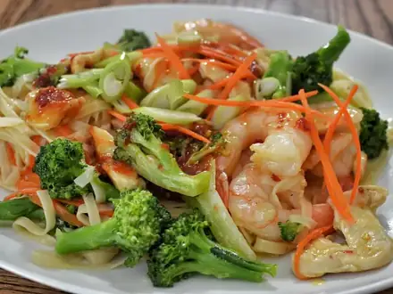
Вок с курицей и овощами30 мин · 665 ккал · Б 50 г · Второе блюдо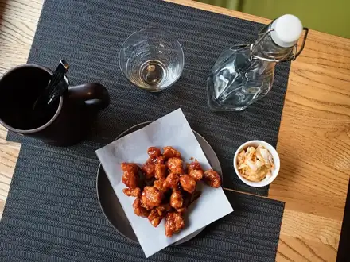
Курица терияки30 мин · 485 ккал · Б 38 г · Второе блюдо Жареная рисовая лапша с креветками30 мин · 757 ккал · Б 41 г · Второе блюдо
Жареная рисовая лапша с креветками30 мин · 757 ккал · Б 41 г · Второе блюдо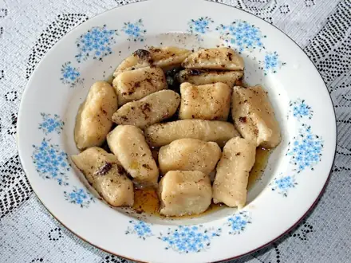
Ленивые вареники30 мин · 365 ккал · Б 29 г · Завтрак Макароны по-флотски из отварного мяса30 мин · 631 ккал · Б 34 г · Второе блюдо
Макароны по-флотски из отварного мяса30 мин · 631 ккал · Б 34 г · Второе блюдо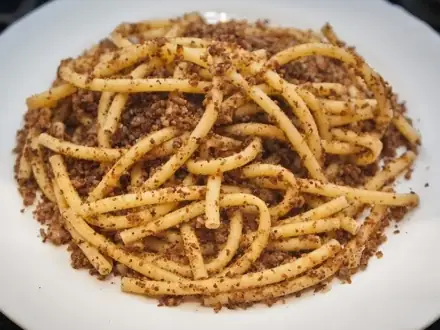
Макароны по-флотски35 мин · 719 ккал · Б 33 г · Второе блюдо Говядина с брокколи35 мин · 466 ккал · Б 34 г · Второе блюдо
Говядина с брокколи35 мин · 466 ккал · Б 34 г · Второе блюдо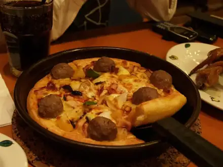
Пицца на сковороде из готового теста35 мин · 624 ккал · Б 25 г · Выпечка- Буррито с курицей35 мин · 649 ккал · Б 42 г · Второе блюдо
 Куриные наггетсы в духовке35 мин · 348 ккал · Б 40 г · Второе блюдо
Куриные наггетсы в духовке35 мин · 348 ккал · Б 40 г · Второе блюдо Индейка на пару с овощами35 мин · 292 ккал · Б 50 г · Второе блюдо
Индейка на пару с овощами35 мин · 292 ккал · Б 50 г · Второе блюдо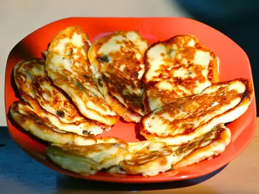
Сырники в духовке без муки35 мин · 260 ккал · Б 25 г · Завтрак Куриные котлеты на пару40 мин · 272 ккал · Б 29 г · Второе блюдо
Куриные котлеты на пару40 мин · 272 ккал · Б 29 г · Второе блюдо Скумбрия в духовке40 мин · 630 ккал · Б 55 г · Второе блюдо
Скумбрия в духовке40 мин · 630 ккал · Б 55 г · Второе блюдо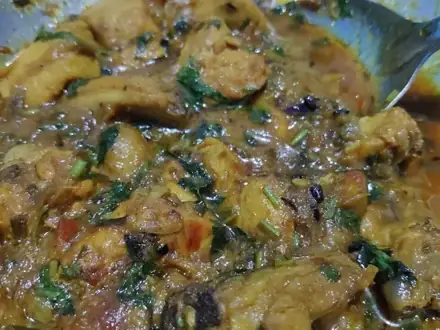
Курица карри с рисом40 мин · 538 ккал · Б 42 г · Второе блюдо Шаурма домашняя в лаваше40 мин · 612 ккал · Б 41 г · Второе блюдо
Шаурма домашняя в лаваше40 мин · 612 ккал · Б 41 г · Второе блюдо Цезарь с курицей40 мин · 626 ккал · Б 45 г · Салат
Цезарь с курицей40 мин · 626 ккал · Б 45 г · Салат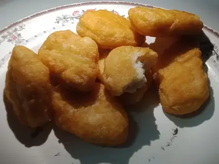
Домашние наггетсы из индейки40 мин · 308 ккал · Б 34 г · Второе блюдо Уха45 мин · 239 ккал · Б 27 г · Суп
Уха45 мин · 239 ккал · Б 27 г · Суп Индейка, тушённая с овощами45 мин · 273 ккал · Б 37 г · Второе блюдо
Индейка, тушённая с овощами45 мин · 273 ккал · Б 37 г · Второе блюдо Рыбные котлеты45 мин · 328 ккал · Б 32 г · Второе блюдо
Рыбные котлеты45 мин · 328 ккал · Б 32 г · Второе блюдо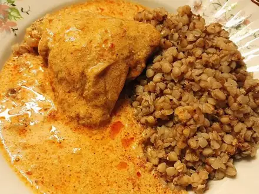
Курица с гречкой на сковороде45 мин · 466 ккал · Б 40 г · Второе блюдо Суп-лапша с курицей по-азиатски45 мин · 266 ккал · Б 30 г · Суп
Суп-лапша с курицей по-азиатски45 мин · 266 ккал · Б 30 г · Суп- Куриные котлеты в духовке45 мин · 265 ккал · Б 25 г · Второе блюдо
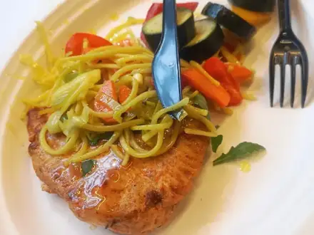
Куриная грудка в духовке в фольге45 мин · 281 ккал · Б 48 г · Второе блюдо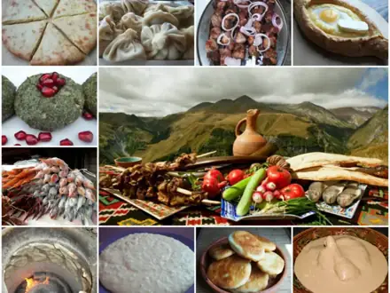
Хачапури по-имеретински на сковороде50 мин · 800 ккал · Б 36 г · Выпечка- Куриные рулетики с сыром50 мин · 321 ккал · Б 44 г · Второе блюдо
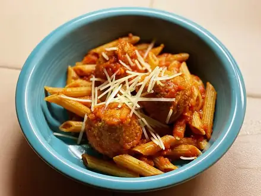
Тефтели из индейки в томате50 мин · 300 ккал · Б 29 г · Второе блюдо Минтай в духовке с овощами50 мин · 213 ккал · Б 26 г · Второе блюдо
Минтай в духовке с овощами50 мин · 213 ккал · Б 26 г · Второе блюдо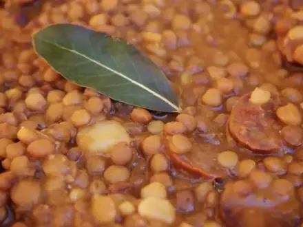
Чечевица с курицей55 мин · 338 ккал · Б 37 г · Второе блюдо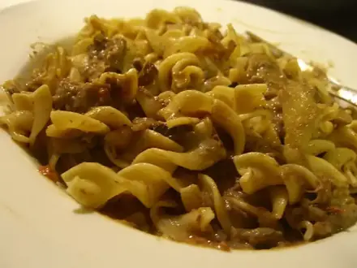
Бефстроганов60 мин · 487 ккал · Б 31 г · Второе блюдо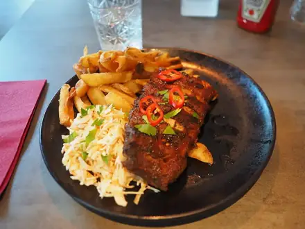
Мясо по-французски60 мин · 615 ккал · Б 31 г · Второе блюдо Блинчики с творогом60 мин · 547 ккал · Б 28 г · Завтрак
Блинчики с творогом60 мин · 547 ккал · Б 28 г · Завтрак Куриные бёдра с картошкой в духовке65 мин · 765 ккал · Б 51 г · Второе блюдо
Куриные бёдра с картошкой в духовке65 мин · 765 ккал · Б 51 г · Второе блюдо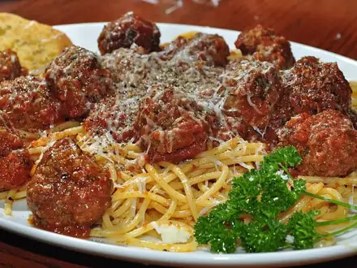
Тефтели в томатном соусе70 мин · 510 ккал · Б 25 г · Второе блюдо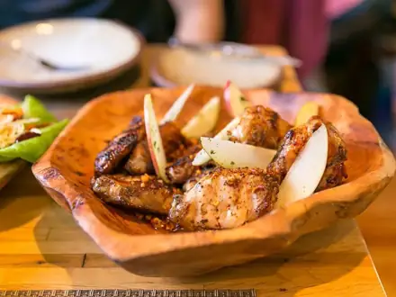
Куриные крылья в медово-соевом соусе70 мин · 544 ккал · Б 49 г · Второе блюдо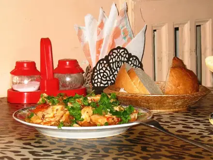
Чахохбили из курицы70 мин · 768 ккал · Б 56 г · Второе блюдо Колдуны70 мин · 781 ккал · Б 26 г · Второе блюдо
Колдуны70 мин · 781 ккал · Б 26 г · Второе блюдо Гефилте фиш (рыбные котлеты в бульоне)70 мин · 249 ккал · Б 34 г · Второе блюдо
Гефилте фиш (рыбные котлеты в бульоне)70 мин · 249 ккал · Б 34 г · Второе блюдо- Чили кон карне70 мин · 550 ккал · Б 31 г · Второе блюдо
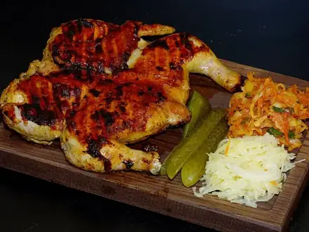
Цыплёнок табака75 мин · 893 ккал · Б 65 г · Второе блюдо- Лагман75 мин · 798 ккал · Б 37 г · Второе блюдо
- Куриные шашлычки в духовке75 мин · 232 ккал · Б 37 г · Второе блюдо
- Ленивые хинкали80 мин · 758 ккал · Б 33 г · Второе блюдо
 Зелёный борщ со шпинатом80 мин · 349 ккал · Б 27 г · Суп
Зелёный борщ со шпинатом80 мин · 349 ккал · Б 27 г · Суп Блинчики с мясом80 мин · 688 ккал · Б 28 г · Второе блюдо
Блинчики с мясом80 мин · 688 ккал · Б 28 г · Второе блюдо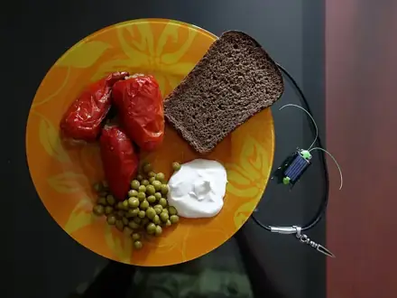
Фаршированные перцы90 мин · 597 ккал · Б 29 г · Второе блюдо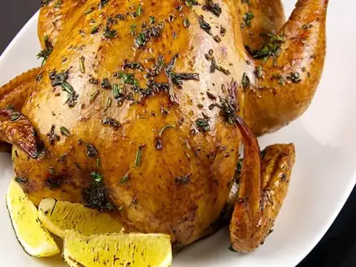
Курица целиком в духовке100 мин · 672 ккал · Б 52 г · Второе блюдо Эчпочмак100 мин · 721 ккал · Б 27 г · Выпечка
Эчпочмак100 мин · 721 ккал · Б 27 г · Выпечка Азу по-татарски100 мин · 574 ккал · Б 33 г · Второе блюдо
Азу по-татарски100 мин · 574 ккал · Б 33 г · Второе блюдо- Суп с домашней лапшой токмач100 мин · 451 ккал · Б 32 г · Суп
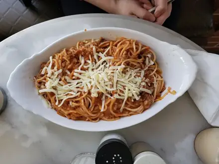
Паста болоньезе100 мин · 788 ккал · Б 35 г · Второе блюдо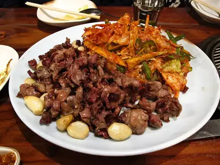
Куриные желудки тушёные100 мин · 406 ккал · Б 44 г · Второе блюдо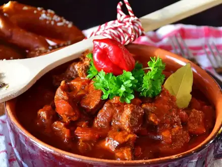
Гуляш из говядины110 мин · 386 ккал · Б 28 г · Второе блюдо Чанахи в горшочках120 мин · 499 ккал · Б 30 г · Второе блюдо
Чанахи в горшочках120 мин · 499 ккал · Б 30 г · Второе блюдо Манты с бараниной120 мин · 651 ккал · Б 29 г · Второе блюдо
Манты с бараниной120 мин · 651 ккал · Б 29 г · Второе блюдо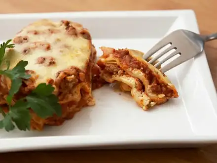
Лазанья с мясом120 мин · 744 ккал · Б 35 г · Второе блюдо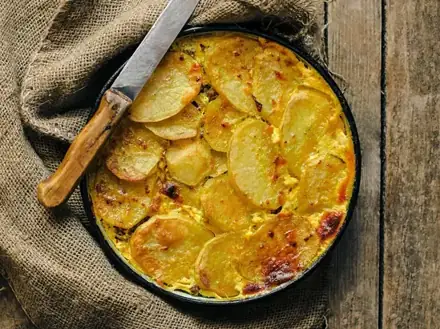
Мусака120 мин · 563 ккал · Б 25 г · Второе блюдо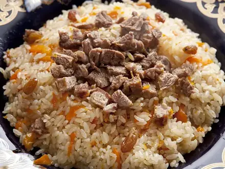
Плов с говядиной130 мин · 880 ккал · Б 33 г · Второе блюдо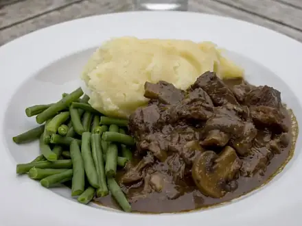
Говядина тушёная с фасолью130 мин · 392 ккал · Б 31 г · Второе блюдо Шурпа из баранины150 мин · 462 ккал · Б 30 г · Суп
Шурпа из баранины150 мин · 462 ккал · Б 30 г · Суп- Плов узбекский с бараниной150 мин · 996 ккал · Б 31 г · Второе блюдо
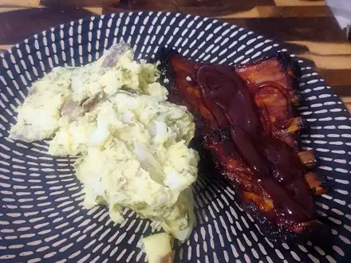
Свиные рёбра в духовке160 мин · 1009 ккал · Б 47 г · Второе блюдо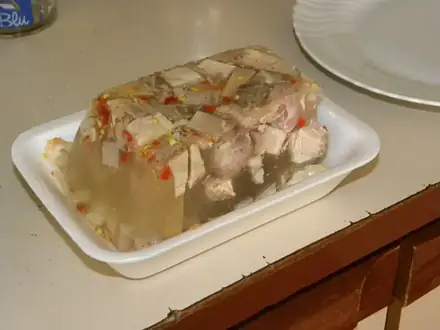
Холодец из курицы с желатином180 мин · 223 ккал · Б 26 г · Закуска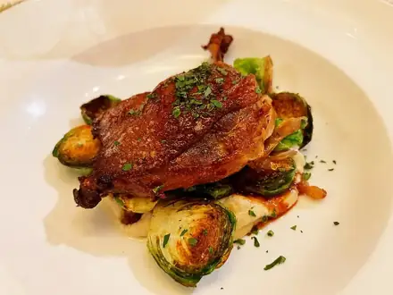
Утка с яблоками в духовке200 мин · 1074 ккал · Б 56 г · Второе блюдо Бешбармак210 мин · 796 ккал · Б 49 г · Второе блюдо
Бешбармак210 мин · 796 ккал · Б 49 г · Второе блюдо- Кальмары тушёные в сметане25 мин · 355 ккал · Б 38 г · Второе блюдо
- Куриное суфле на пару45 мин · 177 ккал · Б 27 г · Второе блюдо
- Мачанка с блинами90 мин · 977 ккал · Б 38 г · Второе блюдо
Другие подборки
- Что приготовить из курицы
- Что приготовить из фарша
- Что приготовить из мяса
- Что приготовить из рыбы
- Что приготовить из картошки
- Что приготовить из яиц
- Что приготовить из творога
- Что приготовить из кабачков
- Что приготовить из капусты
- Что приготовить из грибов
- Что приготовить из риса
- Что приготовить из макарон
- Что приготовить из гречки
- Быстрый ужин за 30 минут
- Быстрый завтрак за 20 минут
- Что приготовить на скорую руку
- ПП-рецепты: лёгкие блюда до 400 ккал
- Дешёвые рецепты из простых продуктов
- Что приготовить ребёнку
- Постные блюда
- Блюда на пару
- Что приготовить в духовке
- Простые супы
- Простые салаты
- Выпечка и десерты
- Блюда на праздничный стол
- Что приготовить из остатков